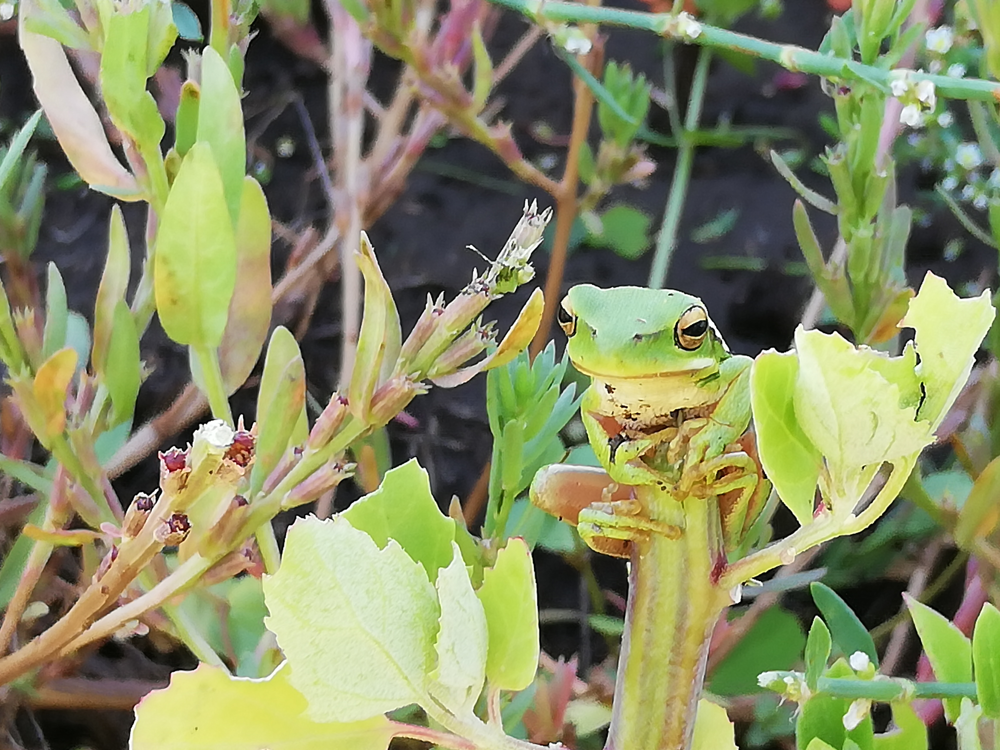

Productos sistémicos
Dentro de todo sistema hay diferentes actores que interactúan entre sí. En los ecosistemas, estas relaciones existen para que los actores puedan cuidarse unos a otros. Aprendiendo de la naturaleza, desde épicos ponemos en el mercado productos que sigan la lógica sistémica. Por eso, estudiamos el ciclo de vida de los productos, y nos encargamos de que cuiden al mundo y a su gente en todo el proceso.

Agroecología
El planeta tierra y su naturaleza vienen evolucionando, a prueba y error, hace 4.000 millones de años. A través de toda esa experiencia, el planeta aprendió cuál es el equilibrio perfecto para el desarrollo de la vida. La tierra es un organismo vivo que nos enseña con sus ecosistemas, una maestra con millones de años de experiencia. Desde épicos la estudiamos y la observamos. Aprovechamos su experiencia. Por eso, cuando cultivamos, imitamos sus ecosistemas llenos de vida. Porque en las relaciones entre especies es donde el cuidado se encuentra con la productividad. Eso es la agroecología, esa es nuestra manera de obtener alimentos de la tierra, aprendiendo a su manera, sin químicos, sin monocultivos, con amor, conocimiento, paciencia y diversidad.

Trabajo rural
Desde épicos creemos que fomentando la industrialización de la materia prima del campo en los pueblos del interior, logramos potenciar economías regionales que actualmente se encuentran fuera del sistema de mercado. Creando productos con valor agregado, buscamos devolverle a las personas del interior el trabajo y la realización personal del que puede desarrollar sus virtudes. Buscamos darle a las personas la tranquilidad de que para poder alimentar a sus hijos, no es necesario mudarse a la ciudad.

Salud
Los buenos alimentos nos permiten desarrollarnos como seres saludables, activos, enérgicos y vitales para hacer de este mundo un lugar mejor. Siguiendo la lógica de producción sistémica, epicos desarrolla alimentos que hagan bien al que los consume. Porque el mundo necesita salud, necesita verdad, necesita agentes de cambio, necesita despertar y alegría, el mundo necesita personas felices y si uno es lo que come, entonces el mundo necesita alimentos que cuidan.
Mirarnos como especie
La montaña sin el río no podría regar sus laderas, el río sin montaña, no podría fluir hacia el mar. En la naturaleza, los actores se comportan como lo que son; parte de un todo. Y la magia sucede cuando todos los actores entienden que solo potenciando al resto se logra llegar al estado superior del sistema. Nuestros productores entendieron eso, por eso son parte de épicos, por eso son comunidad, son sistema, son actores, son magia y son los que necesitan que les compremos para poder seguir haciendo de este mundo, un lugar sistémico. Porque entendieron que cuando actuamos como comunidad, prosperamos, y cuando competimos, sufrimos.